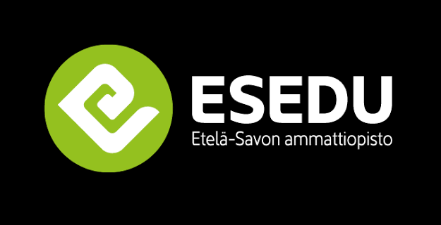

| Arvosana | Opiskelija... |
|---|---|
| Tyydyttävä 1 | toteuttaa työn ohjeiden mukaisesti |
| toimii yhteistyökykyisesti | |
| tarvitsee joissakin tilanteissa lisäohjeita | |
| hyödyntää työssä tarvittavaa perustietoa | |
| muuttaa toimintaansa saamansa palautteen mukaisesti | |
| Tyydyttävä 2 | toteuttaa työön oma-aloitteisesti ja ohjeiden mukaisesti |
| toimii yhteistyökykyisesti ja vuorovaikutteisesti | |
| tarvitsee vain harvoissa tilanteissa lisäohjeita | |
| hyödyntää työssä tarvittavaa tietoa tarkoituksenmukaisesti | |
| muuttaa toimintaansa saamansa palautteen ja omien havaintojen mukaisesti | |
| Hyvä 3 | touteuttaa työkokonaisuuden itsenäisesti |